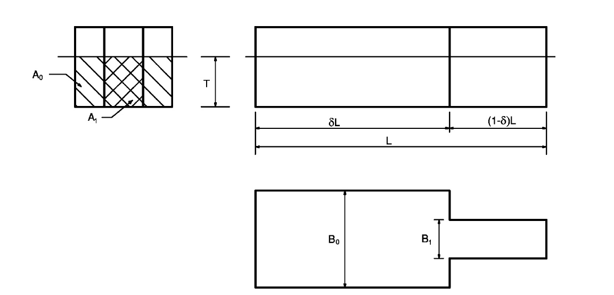

by Sthefano L. Andrade and Henrique M. Gaspar
(sthefano.lande@gmail.com; hega @ hials.no), v0.1, Oct 2015.
A Ship Design and Operations Lab App.
Graphical representation of estimated motion responses for ships. Heave, pitch, roll, vertical motion and vertical acceleration responses are calculated as function of length, breadth, draft, block coefficient, waterline breadth and operational profile. Bending moment is also estimated. Values can be changed by clicking and dragging the sliders.
Based on the article Estimation of ship motions using closed-form expressions by Jensen and Mansour (2004).
Length (m): Ship's waterline length.
Waterline Breadth (m): Ship's maximum breadth at the waterline.
Draft (m): Distance between the bottom of the vessel and the waterline.
Block Coefficient: Ratio between the ship's displacement volume and the volume of a prism with dimensions defined by Length, Waterline Breadth and Draft.
Speed (kts): Speed of the vessel, in knots.
Relative position to CG (%): Longitudinal position on the vessel where the user wishes to study the motion. Defined as a percentage of the ship length in relation to its center of gravity (in this case considered to be located at L/2). Positive to the fore and negative to the aft.
Heading (degrees): Direction of the waves in relation to the ship, where at 180 degrees they are head on waves.
Wave Amplitude(m): Amplitude of the waves.
Waterplane Area Coefficient: Ratio between the ship's waterplane area at desired draft and its waterline length times waterline breadth.
Transverse Metacentric Height (m): Distance between the ship's transverse center of gravity and its transverse meta-center.
Roll Natural Period (s): Natural period of roll of the ship. When unknown by the user, the program suggests a value based on the following rule of thumb: Tn = 0.85*Breadth/GM2
Critical Damping (%): This parameter is used to take into account the water viscosity. The viscose roll damping is approximately accounted for by adding a percentage of the critical damping to the inviscid wave damping.
Prismatic Length Ratio: Length ratio of two prismatic bodies that represent the ship. The ship is assumed to consist of two prismatic elements with the same draft, T, but different breadths B0 and B1 and cross-sectional areas A0 and A1. As shown:

Model of the simplified ship used in roll motion analysis (Jensen and Mansour, 2004)